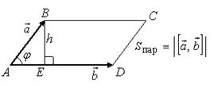

Теоретический раздел
Упорядоченная тройка некомпланарных векторов  ,
,  ,
,  , приведенных к одному началу,
называется правой, если из конца третьего вектора кратчайший
поворот первого вектора ко второму виден совершаемым против часовой
стрелки. В противном случае тройка называется левой.
, приведенных к одному началу,
называется правой, если из конца третьего вектора кратчайший
поворот первого вектора ко второму виден совершаемым против часовой
стрелки. В противном случае тройка называется левой.
, , , приведенных к одному началу,
называется правой, если из конца третьего вектора кратчайший
поворот первого вектора ко второму виден совершаемым против часовой
стрелки. В противном случае тройка называется левой.При перестановке местами двух соседних векторов ориентация
тройки меняется.
Если тройки 

 , , -
правые, то , , – левые.
, , -
правые, то , , – левые.
, , -
правые, то , , – левые.При круговой (циклической) перестановке векторов ориентация
тройки не меняется.
Векторным произведением вектора на
вектор называется вектор
Запись векторного произведения двух
векторов
, удовлетворяющий следующим
трем требованиям:
на
вектор называется вектор
Запись векторного произведения двух
векторов
, удовлетворяющий следующим
трем требованиям:1˚. Длина вектора равна
произведению длин векторов и на синус угла между ними, т.е..
равна
произведению длин векторов и на синус угла между ними, т.е..2˚. Вектор ортогонален к
каждому из векторов и ,
т.е. перпендикулярен плоскости, в которой
лежат векторы и .
ортогонален к
каждому из векторов и ,
т.е. перпендикулярен плоскости, в которой
лежат векторы и .3˚. Вектор направлен так,
что тройка является правой.
направлен так,
что тройка является правой.Алгебраические и геометрические свойства:
1˚. Антиперестановочность сомножителей:
Антиперестановочность
сомножителей векторного произведения
.
2˚. Сочетательное свойство:
Сочетательное свойство
относительно операции векторного произведения двух векторов
.
3˚. Распределительное свойство:
Распределительное
свойство относительно операции векторного произведения двух векторов
.
4˚.
Векторное
произведение вектора на самого себя дает нулевой вектор
для
любого вектора .
.5˚. .
6˚.
Если векторное
произведение двух векторов равно нулю, то эти векторы коллинеарны
.

Если
 Выражение векторного
произведения двух векторов через их координаты
Выражение векторного
произведения двух векторов через их координаты
Выражение векторного
произведения двух векторов через их координаты
.
Если  и коллинеарны,
то
и коллинеарны,
то
 Условие
коллинеарности двух векторов
.
Условие
коллинеарности двух векторов
.
и коллинеарны,
то
Условие
коллинеарности двух векторов
.Смешанное произведение некомпланарных векторов
Запись смешанного
произведения векторов
по
абсолютной величине равно объему параллелепипеда, построенного на этих
векторах, приведенных к одному началу.
положительно, если тройка , , правая и отрицательно, если она
левая.
, , правая и отрицательно, если она
левая.
Если же векторы , , компланарны,
то равно нулю:
, , компланарны,
то равно нулю:
Условие
компланарности трех векторов
.
Смешанное
произведение не меняет свой знак при циклической перестановке его сомножителей
,
Смешанное
произведение меняет свой знак при перемене мест любых двух
векторов-сомножителей
.
Смешанное
произведение не меняется при перемене местами знаков векторного и скалярного
произведения
смешанное произведение зависит от порядка сомножителей, но
не зависит от того, какие сомножители связаны первичным знаком векторного произведения.
Если  , ,
, ,  ,
то
,
то
, , ,
то
Выражение
смешанного произведения векторов через их координаты
.
Двойное векторное произведение векторов:
Двойное векторное
произведение
.
(эта формула носит жаргонное мнемоническое название “формула
бац минус цаб”).